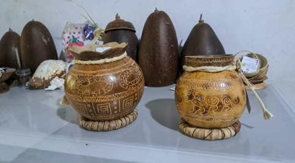

En la vida cotidiana
Guacales, cucharas, maracas y recipientes muestran su vínculo con las costumbres y los usos tradicionales de la región.
Liberia, Guanacaste · Costa Rica
Una tradición artesanal que mantiene viva la memoria de Guanacaste.
Un recurso para la comunidad de Liberia y Guanacaste: descubre los saberes, las creaciones y las personas que mantienen viva esta tradición.
Conoce a las artesanas Explorar la tradición
La tradición
El jícaro es el fruto que, en manos artesanas, se convierte en guacales, recipientes, instrumentos y piezas decorativas.
Su corteza se prepara y trabaja con paciencia. En Guanacaste, este saber tiene raíces precolombinas y campesinas: acompañó la vida doméstica y agrícola y hoy también encuentra nuevas formas de expresión artística.
Sobre las fuentes de esta historiaGuacales, cucharas, maracas y recipientes muestran su vínculo con las costumbres y los usos tradicionales de la región.
El labrado, el calado y el esgrafiado dan lugar a piezas utilitarias y decorativas con diseños propios.
La flora, la fauna y los motivos de herencia chorotega conectan las creaciones actuales con la identidad de Guanacaste.
Del fruto a la artesanía
Antes de que aparezca un diseño hay selección, preparación y tiempo. Las prácticas cambian según la artesana, la materia prima y el acabado que busca.
Elegir el fruto adecuado es parte del conocimiento del oficio. Yadira describe la importancia del estado del jícaro al cortarlo.
El corte prepara la forma que tendrá la pieza y permite trabajar el interior del fruto.
Vaciar el jícaro requiere trabajo y cuidado. Esta preparación suele pasar inadvertida al observar una artesanía terminada.
En el proceso relatado por Yadira, el hervido facilita retirar la pulpa y limpiar la corteza.
El secado al sol puede requerir semanas. La preparación de la materia prima no es un trabajo inmediato.
Labrado, calado o esgrafiado: cada técnica y herramienta responde a la pieza y a la experiencia de quien la elabora.
Se incorporan formas, detalles y motivos que convierten el material en una creación utilitaria o decorativa.
Este recorrido reúne etapas documentadas en la investigación; no es una receta única ni una secuencia idéntica para todas las artesanas.
Portadoras de la tradición
Dos trayectorias distintas, unidas por la creatividad y el empeño de mantener vivo un conocimiento que va más allá del objeto.
Jícaros de la Pampa · Colorado, Liberia
La naturaleza costarricense encuentra nuevas formas en sus creaciones.
Con más de trece años de trayectoria documentada en la investigación, Yadira trabaja el labrado y el calado. Sus motivos de flora y fauna conviven con piezas de uso cotidiano, como los chorreadores de café.
Su aprendizaje principalmente autodidacta se complementó con capacitación. Su experiencia recuerda que el oficio comienza mucho antes del diseño: en la selección, el corte y la preparación cuidadosa del fruto.
Creaciones Artesanales Rous · Barrio Moracia, Liberia
Un puente entre la memoria precolombina y la creación contemporánea.
Rosaura comenzó observando a su hermana y amplió sus conocimientos mediante formación y asistencia técnica relacionada con el INA. En su trabajo destacan el esgrafiado y las herramientas manuales adaptadas.
Sus piezas incorporan grecas, figuras zoomorfas y representaciones de la serpiente emplumada, inspiradas en la herencia cultural chorotega.
Según la información recogida por el grupo, en 2011 se comprometió más con el oficio y en 2013 inició capacitación formal. La investigación documenta un reconocimiento del Centro de Patrimonio Cultural en la categoría de jícaro y calabaza, y el Sello Cultural y Artesanal del MEIC en algunos de sus productos.
El futuro de la tradición
Yadira y Rosaura mantienen esta tradición con creatividad y dedicación. Sus experiencias también nos invitan a pensar cómo podemos acompañar su trabajo desde la comunidad.
La vida cotidiana
Los recipientes industriales y plásticos han desplazado parte de los usos del guacal. Con ese cambio, el jícaro pierde presencia en la vida diaria.
Acercar sus usos e historias a las familias, las escuelas y los espacios culturales de Liberia ayuda a que más personas conozcan esta tradición.
Conoce su historiaEl trabajo artesanal
El acceso a herramientas e insumos y los pocos espacios de exhibición dificultan sostener el oficio. Detrás de cada creación hay tiempo, preparación y conocimiento.
Reconocer la autoría de las piezas y promover espacios donde las artesanas puedan mostrar su trabajo son formas de valorar su aporte cultural.
Conoce a las artesanasLa transmisión de saberes
Aprender a trabajar el jícaro requiere práctica y paciencia. La falta de relevo generacional pone en riesgo la continuidad de estos conocimientos.
Promover encuentros entre artesanas, centros educativos y comunidad, acordados con ellas y respetando su tiempo, abre oportunidades para compartir el oficio.
Acércate al procesoLa tradición continúa
cuando la comunidad se involucra.
Galería artesanal
Acércate a los colores, las formas y los detalles. Selecciona una fotografía para verla completa y conocer su autoría.
Memorias de un oficio · El documental
Acompaña a Yadira y Rosaura en un recorrido por sus creaciones, sus saberes y las historias que dan vida a la artesanía del jícaro en Liberia.
Conoce esta tradición a través de sus protagonistas.
El legado artesanal del jícaro en Liberia, GuanacasteVer en YouTube
Fuentes y créditos
Gracias a Yadira Hernández y Rosaura Bustos Rodríguez por compartir sus conocimientos, experiencias y creaciones.
Esta página se basa en la investigación El legado artesanal del jícaro en Liberia, Guanacaste: valor, rescate y retos actuales (2026). Los textos reúnen los conocimientos y las experiencias compartidos por las artesanas durante el trabajo de campo.
Creaciones artesanales: Yadira Hernández, Jícaros de la Pampa; Rosaura Bustos Rodríguez, Creaciones Artesanales Rous. Fotografías: material aportado por el grupo de investigación.
Yadira Hernández y Rosaura Bustos Rodríguez participaron con consentimiento informado. Las entrevistas, fotografías y grabaciones se realizaron con su autorización, y el uso de sus nombres, imágenes y voces en este recurso respeta los fines académicos y divulgativos acordados. Los documentos de consentimiento y los datos de contacto privados no se publican.